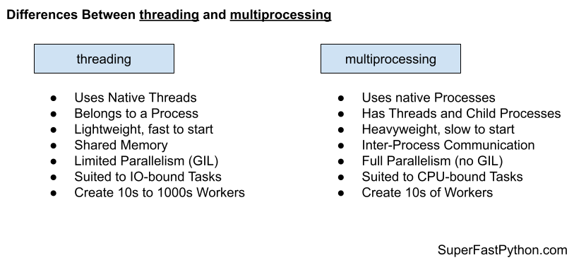

Threading vs Multiprocessing in Python
The "multiprocessing" module provides process-based concurrency whereas the "threading" module provides thread-based concurrency.
In this tutorial you will discover the similarities and differences between the multiprocessing and threading modules for concurrency in Python.
Let's get started.
What is Threading in Python
The "threading" module provides thread-based concurrency in Python.
Technically, it is implemented on top of another lower-level module called "_thread".
This module constructs higher-level threading interfaces on top of the lower level _thread module.
-- threading — Thread-based parallelism
A thread refers to a thread of execution in a computer program.
Each program is a process and has at least one thread that executes instructions for that process.
Thread: The operating system object that executes the instructions of a process.
-- Page 273, The Art of Concurrency, 2009.
Central to the threading module is the threading.Thread class that provides a Python handle on a native thread (managed by the underlying operating system).
A function can be run in a new thread by creating an instance of the threading.Thread class and specifying the function to run via the "target" argument. The Thread.start() function can then be called which will execute the target function in a new thread of execution.
For example:
...
# create a thread
thread = Thread(target=task)
# start the new thread
thread.start()Alternatively, the threading.Thread class can be extended and the Thread.run() method overrides to specify the code to run in a new function. The new class can be created and the inherited Thread.start() method called to execute the contents of the run() method in a new thread of execution.
The properties of the thread can be set and configured, e.g. name and daemon, and one thread may join another, causing the caller thread to block until the target thread has terminated.
You can learn more about the life-cycle of a Python thread in the tutorial:
The rest of the "threading" module provides tools to work with threading.Thread instances.
This includes a number of static module functions that allow the caller to get a count of the number of active threads, get access to a threading.Thread instance for the current thread, enumerate all active threads in the process and so on.
There is also a threading.local API that provides access to thread-local data storage, a facility that allows threads to have private data not accessible to other threads.
Finally, the threading API provides a suite of concurrency primitives for synchronizing and coordinating threads.
This includes mutex locks in the threading.Lock and threading.RLock classes, semaphores in the threading.Semaphore class, thread-safe boolean variables in the threading.Event class, a thread with a delayed start in the threading.Timer class and finally a barrier pattern in the threading.Barrier class.
The API of the threading.Thread class and the concurrency primitives were inspired by the Java threading API, such as java.lang.Thread class and later the java.util.concurrent API.
Thread module emulating a subset of Java's threading model.
-- threading.py
In fact, the API originally had many camel-case function names, like those in Java, that were later changed to be more Python compliant names via PEP 8 – Style Guide for Python Code in 2001.
# Note regarding PEP 8 compliant names
-- threading.py
# This threading model was originally inspired by Java, and inherited
# the convention of camelCase function and method names from that
# language.
A key limitation of threading.Thread for thread-based concurrency is that it is subject to the Global Interpreter Lock (GIL). This means that only one thread can run at a time in a Python process, unless the GIL is released, such as during I/O or explicitly in third-party libraries.
In CPython, due to the Global Interpreter Lock, only one thread can execute Python code at once (even though certain performance-oriented libraries might overcome this limitation). [...] However, threading is still an appropriate model if you want to run multiple I/O-bound tasks simultaneously.
-- threading — Thread-based parallelism
This limitation means that although threads can achieve concurrency (executing tasks out of order), it can only achieve parallelism (executing tasks simultaneously) under specific circumstances.
You can learn more about Python threading in the guide:
Now that we are familiar with the threading module, let's take a look at the multiprocessing module.
What is Multiprocessing in Python
The "multiprocessing" module provides process-based concurrency in Python.
Jesse Noller and Richard Oudkerk proposed and developed the multiprocessing module (originally called "pyprocessing") in Python specifically to overcome the limitations and side-step the GIL seen in thread-based concurrency.
The pyprocessing package offers a method to side-step the GIL allowing applications within CPython to take advantage of multi-core architectures without asking users to completely change their programming paradigm (i.e.: dropping threaded programming for another “concurrent” approach - Twisted, Actors, etc).
-- PEP 371 – Addition of the multiprocessing package to the standard library
With this goal in mind the "multiprocessing" module attempted to replicate the "threading" module API, although implemented using processes instead of threads.
The processing package mimics the standard library threading module functionality to provide a process-based approach to threaded programming allowing end-users to dispatch multiple tasks that effectively side-step the global interpreter lock.
-- PEP 371 – Addition of the multiprocessing package to the standard library
A process refers to a computer program.
Every Python program is a process and has one default thread called the main thread used to execute your program instructions. Each process is, in fact, one instance of the Python interpreter that executes Python instructions (Python byte-code), which is a slightly lower level than the code you type into your Python program.
Central to the multiprocessing module is the multiprocessing.Process class that provides a Python handle on a native process (managed by the underlying operating system).
A function can be run in a new process by creating an instance of the multiprocessing.Process class and specifying the function to run via the "target" argument, just like we would with a threading.Thread. The Process.start() method can then be called which will execute the target function in a new thread of execution.
For example:
...
# create a process
process = Process(target=task)
# start the new process
process.start()Alternatively, the multiprocessing.Process class can be extended and the Process.run() method overrides to specify the code to run in a new function. The new class can be created and the inherited Process.start() method called to execute the contents of the run() method in a new thread of execution.
The properties of the thread can be set and configured, e.g. name and daemon, and one thread may join another, causing the caller thread to block until the target thread has terminated.
You can learn more about the life-cycle of a Python thread in the tutorial:
Much of the rest of the "multiprocessing" module provides tools to work with multiprocessing.Process instance, that mimics the threading module.
The multiprocessing package mostly replicates the API of the threading module.
-- multiprocessing — Process-based parallelism
This includes a number of static module functions that allow the caller to get a count of the number of CPUs in the system, get access to a multiprocessing.Process instance for the current process, enumerate all active child processes and so on.
The multiprocessing API provides a suite of concurrency primitives for synchronizing and coordinating processes, as process-based counterparts to the threading concurrency primitives. This includes multiprocessing.Lock, multiprocessing.RLock, multiprocessing.Semaphore, multiprocessing.Event, multiprocessing.Condition, and multiprocessing.Barrier.
Process-safe queues are provided in multiprocessing.Queue, multiprocessing.SimpleQueue and so on that mimic the thread-safe queues provided in the "queue" module.
This is where the similarities end.
The multiprocessing module provides much more capabilities, focused on the inter-process communication, the manner in which data is transmitted between processes. This is more involved than sharing data between threads, which happens more simply within one process.
In addition to process-safe versions of queues, multiprocessing.connection.Connection are provided that permit connection between processes both on the same system and across systems. This provides a foundation for primitives such as the multiprocessing.Pipe for one-way and two-way communication between processes as well as managers.
The API provides a multiprocessing.Manager API that creates a server process for managing centralized versions of Python objects and providing proxy objects for other processes that allow them to interact with the centralized object in a seamless manner, while inter-process communication is occurring behind the scenes.
More simply, the shared ctypes API allows sharing of data primitives between processes with the multiprocessing.Value and multiprocessing.Array classes.
Additionally, the multiprocessing API provides multiple ways to create child processes, such as forking and spawning, depending on the capabilities of the underlying operating system. This can be managed using a multiprocessing context.
Sharing data between processes is more challenging than between threads, although the multiprocessing API does provide a lot of useful tools.
You can learn more about Python multiprocessing in the guide:
Now that we are familiar with the threading and multiprocessing modules, let's compare them.
Comparison of Multiprocessing vs Threading
Now that we are familiar with the Multiprocessing and Threading modules, let's review their similarities and differences.
Similarities Between Multiprocessing and Threading
The Multiprocessing and Threading modules are very similar, let's review some of the most important similarities.
Some key similarities between the modules include:
- Both Modules are Used For Concurrency.
- Both Have The Same API (mostly).
- Both Support The Same Concurrency Primitives.
Let's take a closer look at each in turn.
1. Both Modules are Used For Concurrency
Both the threading module and the multiprocessing module are intended for concurrency.
There are whole classes of problems that require the use of concurrency, that is running code or performing tasks out of order.
Problems of these types can generally be addressed in Python using threads or processes, at least at a high-level.
2. Both Have The Same API (mostly)
Both the threading module and the multiprocessing module have the same API.
Specifically when:
- Running a function in a new thread or process, e.g. the "target" argument on the class constructor.
- Extending the class and overriding the run() method.
- Starting a new thread or process via the start() method.
The threading module was developed first and it was a specific intention of the multiprocessing module developers to use the same API, both inspired by Java concurrency.
This similarity carries over to concurrency primitives, queues, and some module functions.
3. Both Support The Same Concurrency Primitives
Both the threading module and the multiprocessing module support the same concurrency primitives.
Concurrency primitives are mechanisms for synchronizing and coordinating threads and processes.
Concurrency primitives with the same classes and same API are provided for use with both threads and processes, for example:
- Locks (mutex) with threading.Lock and multiprocessing.Lock.
- Recurrent Locks with threading.RLock and multiprocessing.RLock.
- Condition Variables with threading.Condition and multiprocessing.Condition.
- Semaphores with threading.Semaphore and multiprocessing.Semaphore.
- Event Objects with threading.Event and multiprocessing.Event.
- Barriers with threading.Barrier and multiprocessing.Barrier.
This allows the same concurrency design patterns to be used with either thread-based concurrency or process-based concurrency.
Differences Between Threading and Multiprocessing
The Threading and Multiprocessing modules are also quite different, let's review some of the most important differences.
Some key differences between the modules include:
- Native Threads vs. Native Processes.
- Shared Memory vs. Inter-Process Communication.
- Limited vs Full Parallelism (GIL).
Let's take a closer look at each in turn.
1. Native Threads vs. Native Processes
Perhaps the most important difference between the modules is the type of concurrency that underlies them.
The focus of the threading module is a naive thread managed by the operating system.
The focus of the multiprocessing module is a native process managed by the underlying operating system.
A process is a high-level of abstraction than a thread.
- A process has a main thread.
- A process may have additional threads.
- A process may have child processes.
Whereas a thread belongs to a process.
This is the central difference between the two modules and supports all other differences.
2. Shared Memory vs. Inter-Process Communication
Threads and Processes have important differences in the way they access shared state.
Threads can share memory within a process.
This means that functions executed in new threads can access the same data and state. These might be global variables or data shared via function arguments. As such, sharing state between threads is straightforward.
Processes do not have shared memory like threads.
Instead, state must be serialized and transmitted between processes, called inter-process communication. Although it occurs under the covers, it does impose limitations on what data and state can be shared and adds overhead to sharing data.
Typically sharing data between processes requires explicit mechanisms, such as the use of a multiprocessing.Pipe or a multiprocessing.Queue.
As such, sharing state between threads is easy and lightweight, and sharing state between processes is harder and heavyweight.
3. Limited vs Full Parallelism (GIL)
Thread-based concurrency supports parallelism, whereas process-based concurrency supports full parallelism.
Multiple threads are subject to the global interpreter lock (GIL), whereas multiple child processes are not subject to the GIL.
The GIL is a programming pattern in the reference Python interpreter (e.g. CPython, the version of Python you download from python.org).
It is a lock in the sense that it uses synchronization to ensure that only one thread of execution can execute instructions at a time within a Python process.
This means that although we may have multiple threads in our program, only one thread can execute at a time.
The GIL is used within each Python process, but not across processes. This means that multiple child processes can execute at the same time and are not subject to the GIL.
This has implications for the types of tasks best suited to each class.
Summary of Differences
It may help to summarize the differences between threading and multiprocessing.
Threading
- Uses native threads, not a native process.
- Thread belongs to a process.
- Shared memory, not inter-process communication.
- Lightweight and fast to start, not heavyweight.
- Subject to the GIL, limited (not full) parallel execution.
- Suited to IO-bound tasks, not CPU bound tasks.
- Create 10s to 1,000s of threads, not really constrained.
Multiprocessing
- Uses native processes, not native threads.
- Process has threads, and has child processes.
- Heavyweight and slower to start, not lightweight and fast to start.
- Full parallelism, not limited or constrained by the GIL.
- Inter-process communication, not shared memory.
- Suited to CPU-bound tasks, probably not IO-bound tasks.
- Create 10s of processes, not 100s or 1,000s of tasks.
The figure below provides a helpful side-by-side comparison of the key differences between the threading and multiprocessing modules in Python.

When to Use Threading
The threading module provides powerful and flexible concurrency, although is not suited for all situations where you need to run a computation-focused background task.
In this section, we'll look at broad classes of tasks and why they are or are not appropriate for the threads.
Use Threading for for IO-Bound Tasks
You should use the threading module for IO-bound tasks in Python in general.
An IO-bound task is a type of task that involves reading from or writing to a device, file, or socket connection.
The operations involve input and output (IO), and the speed of these operations is bound by the device, hard drive, or network connection. This is why these tasks are referred to as IO-bound.
CPUs are really fast. Modern CPUs, like a 4GHz, can execute 4 billion instructions per second, and you likely have more than one CPU in your system.
Doing IO is very slow compared to the speed of CPUs.
Interacting with devices, reading and writing files, and socket connections involve calling instructions in your operating system (the kernel), which will wait for the operation to complete. If this operation is the main focus for your CPU, such as executing in the main thread of your Python program, then your CPU is going to wait many milliseconds, or even many seconds, doing nothing.
That is potentially billions of operations that it is prevented from executing.
We can free-up the CPU from IO-bound operations by performing IO-bound operations on another thread of execution. This allows the CPU to start the process and pass it off to the operating system (kernel) to do the waiting and free it up to execute in another application thread.
There's more to it under the covers, but this is the gist.
Therefore, the tasks we execute with a threading.Thread should be tasks that involve IO operations.
Examples include:
- Reading or writing a file from the hard drive.
- Reading or writing to standard output, input, or error (stdin, stdout, stderr).
- Printing a document.
- Downloading or uploading a file.
- Querying a server.
- Querying a database.
- Taking a photo or recording a video.
- And so much more.
If your task is not IO-bound, perhaps threads and using a thread pool is not appropriate.
Don't Use Threading for for for CPU-Bound Tasks
You should probably not use the threading module for CPU-bound tasks in general.
A CPU-bound task is a type of task that involves performing a computation and does not involve IO.
CPUs are very fast, and we often have more than one CPU core on a single chip in modern computer systems. We would like to perform our tasks and make full use of multiple CPU cores in modern hardware.
Using threads via the threading.Thread class in Python is probably not a path toward achieving this end.
This is because of a technical reason behind the way the Python interpreter was implemented. The implementation prevents two Python operations executing at the same time inside the interpreter, and it does this with a master lock that only one thread can hold at a time called the global interpreter lock, or GIL.
The GIL is not evil and is not frustrating; it is a design decision in the Python interpreter that we must be aware of and consider in the design of our applications.
I said that you “probably” should not use threads for CPU-bound tasks.
You can and are free to do so, but your code will not benefit from concurrency because of the GIL. It will likely perform worse because of the additional overhead of context switching (the CPU jumping from one thread of execution to another) introduced by using threads.
Additionally, the GIL is a design decision that affects the reference implementation of Python. If you use a different implementation of the Python interpreter (such as PyPy, IronPython, Jython, and perhaps others), then you may not be subject to the GIL and can use threads for CPU bound tasks directly.
Now that we are familiar with the types of tasks suited to the threading module, let's look at the types of tasks suited to the multiprocessing module specifically.
When to Use Multiprocessing
The multiprocessing module provides powerful and flexible concurrency, although is not suited for all situations where you need to run a background task.
In this section, we'll look at broad types of tasks and why they are or are not appropriate for the processes.
Use the Multiprocessing for CPU-Bound Tasks
You should probably use the multiprocessing module for CPU-bound tasks.
A CPU-bound task is a type of task that involves performing a computation and does not involve IO where data needs to be shared between processes.
The operations only involve data in main memory (RAM) or cache (CPU cache) and performing computations on or with that data. As such, the limit on these operations is the speed of the CPU. This is why we call them CPU-bound tasks.
Examples include:
- Calculating points in a fractal.
- Estimating Pi
- Factoring primes.
- Parsing HTML, JSON, etc. documents.
- Processing text.
- Running simulations.
CPUs are very fast, and we often have more than one CPU. We would like to perform our tasks and make full use of multiple CPU cores in modern hardware.
Using processes and process pools via the multiprocessing module in Python is probably the best path toward achieving this end.
Don't Use Multiprocessing for IO-Bound Tasks
You can use the multiprocessing module for IO-bound tasks, although the threading module is likely a better fit.
An IO-bound task is a type of task that involves reading from or writing to a device, file, or socket connection.
Processes can be used for IO-bound tasks in the same way that threads can be, although there are major limitations to using processes.
- Processes are heavyweight structures; each has at least a main thread.
- All data sent between processes must be serialized.
- The operating system may impose limits on the number of processes you can create.
When performing IO-operations, we very likely will need to move data between worker processes back to the main process. This may be costly if there is a lot of data as the data must be pickled at one end and unpickled at the other end. Although this data serialization is performed automatically under the covers, it adds a computational expense to the task.
Additionally, the operating system may impose limits on the total number of processes supported by the operating system, or the total number of child processes that can be created by a process. For example, the limit in Windows is 61 child processes. When performing tasks with IO, we may require hundreds or even thousands of concurrent workers (e.g. each managing a network connection), and this may not be feasible or possible with processes.
Nevertheless, the multiprocessing module may be appropriate for IO-bound tasks if the requirement on the number of concurrent tasks is modest (e.g. less than 100) and the data sharing requirements between processes is also modest (e.g. processes don't share much or any data).
Takeaways
You now know the difference between threading and multiprocessing and when to use each.